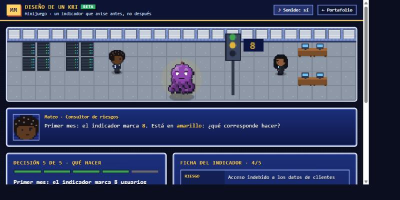
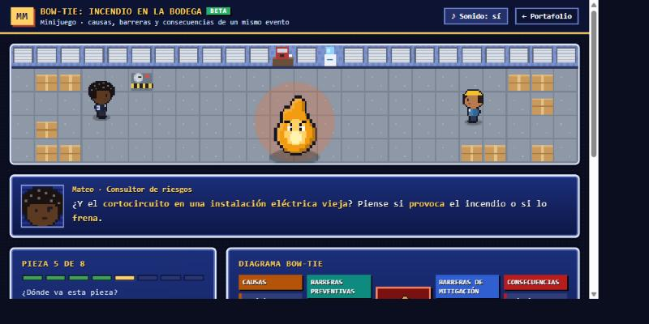

Matriz de Riesgos Demo
Matriz de Riesgos de Procesos
Tiene cuarenta riesgos en la matriz y capacidad para atender cinco. Ordénelos por magnitud real y sustente ante el comité por qué esos cinco.
Consultor de Riesgos Empresariales
Soy consultor de riesgos empresariales en una firma global de consultoría y corretaje de riesgos. Antes pasé cinco años en Deloitte como auditor interno senior, donde ejecuté más de diez auditorías y lideré el testeo de controles bajo la Ley Sarbanes-Oxley. Hoy diseño metodologías, políticas e indicadores clave de riesgo para empresas de varios sectores y tamaños, y facilito los talleres donde esos riesgos se discuten con los comités directivos.
Las herramientas de esta página salieron de ese trabajo: las construí porque las necesitaba.
Demostraciones interactivas
Cada uno resuelve un problema que me he encontrado en campo: valorar y priorizar, mapear causas y barreras, homologar matrices dispares, fijar umbrales de apetito y decidir cuánto probar. Están en vivo: ábralos y úselos.
Son versiones demostrativas. Están simplificadas a propósito y traen datos de ejemplo: sirven para mostrar el enfoque en cinco minutos, no para operar. Las versiones completas se parametrizan con la metodología, las escalas de valoración y los reportes de cada organización. Si le interesa alguna en serio, escríbame y se la muestro funcionando de verdad.
Tiene cuarenta riesgos en la matriz y capacidad para atender cinco. Ordénelos por magnitud real y sustente ante el comité por qué esos cinco.
Un evento se materializó: la pregunta es por dónde entró y qué barrera falló. Separe causas de consecuencias y deje ver dónde está descubierto.
Cada área entregó su matriz en un formato distinto. Homologue las estructuras, detecte el mismo riesgo escrito de tres maneras y deje una sola base.
La junta pregunta cuánto riesgo puede asumir la compañía. Traduzca la capacidad financiera a umbrales de apetito y tolerancia que pueda defender.
Tiene que probar un control y no sabe cuántas partidas revisar. Calcule el tamaño de muestra y deje documentado el sustento estadístico.
Estas cinco salieron de necesidades concretas. Si la suya es otra, probablemente se resuelve con el mismo método: escríbame y la miramos.
Formación y cultura de riesgos
La cultura de riesgos no se instala con diapositivas. Para cursos y talleres diseñé ejercicios cortos con estética de videojuego de 8 bits: el participante toma decisiones, recibe la explicación al instante y ve cómo queda armado el resultado de su criterio. Se resuelven en unos cinco minutos, de manera individual o en grupo con el ejercicio proyectado.
Son versiones beta. Funcionan completas, pero siguen en prueba con grupos y pueden cambiar. Si quiere usarlas en un curso o taller de su organización, escríbame y las adaptamos a sus riesgos.

Un riesgo de acceso indebido a datos de clientes y cinco decisiones: qué medir, con qué umbrales, cada cuánto, quién responde y qué hacer cuando el indicador se pone amarillo. Al final queda la ficha completa del indicador.

Ocho piezas alrededor de un incendio en la bodega de químicos. Ubique cada una como causa, barrera preventiva, barrera de mitigación o consecuencia y vea armarse el diagrama: unas barreras bajan la probabilidad y otras el impacto.
Contacto
Si algo de esto le sirve a su organización, o si está montando un área de riesgos y no sabe por dónde empezar, escríbame. Respondo todo.